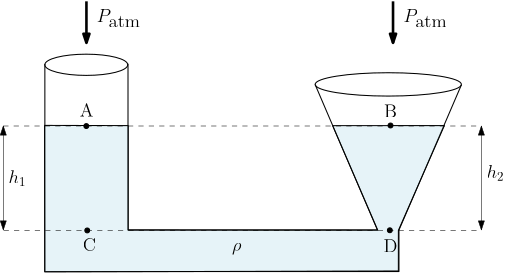
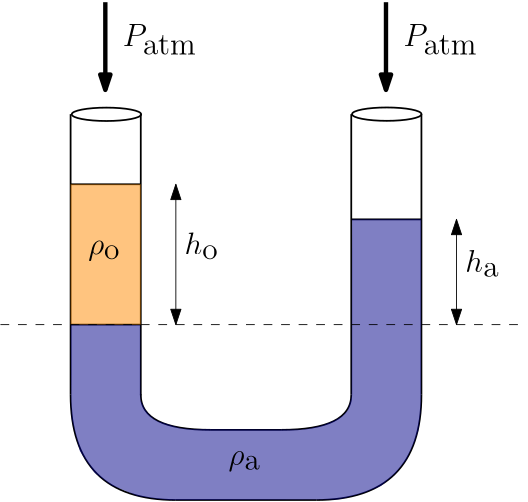
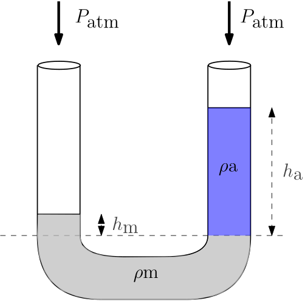
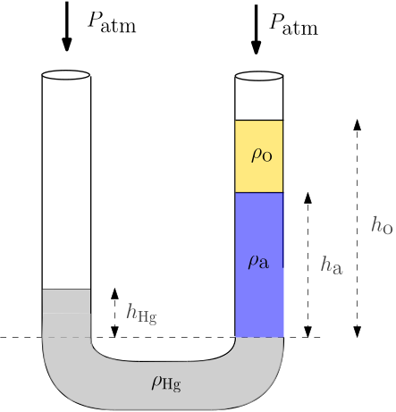

Aula 04 - Vasos Comunicantes com Líquidos Imiscíveis
Mecânica dos Fluidos
Objetivos
Ao final desta aula, você deverá ser capaz de:
- Compreender o princípio dos vasos comunicantes e sua relação com o Teorema de Stevin.
- Analisar o comportamento de líquidos miscíveis e imiscíveis em vasos comunicantes.
- Determinar a altura de colunas líquidas em tubos em forma de U com diferentes líquidos.
- Aplicar os conceitos de vasos comunicantes em situações práticas como caixas d’água, níveis hidrostáticos.
- Resolver problemas envolvendo tubos em U com múltiplos líquidos imiscíveis utilizando os métodos do Fluxo e do Equilíbrio.
- Realizar conversões entre diferentes sistemas de unidades com consistência dimensional.
Introdução
Você já reparou como funciona o sistema de abastecimento de água de um edifício? A água sobe até a caixa d’água localizada no topo e, de lá, desce para todos os andares. Se você abrir uma torneira no décimo andar e outra no térreo, notará que a pressão no térreo é maior. Mas o que acontece se você conectar dois reservatórios por um tubo na base? O nível da água se igualará nos dois, independentemente de seus formatos.
Por que os níveis de um mesmo líquido em recipientes interligados se igualam?
Ou ainda: por que em um tubo em forma de “U” com dois líquidos diferentes, as alturas das colunas são inversamente proporcionais às suas densidades?
A resposta para essas perguntas está no princípio dos vasos comunicantes, uma consequência direta do Teorema de Stevin que estudamos na aula anterior.
Nesta aula, vamos explorar esse princípio fascinante e suas aplicações práticas, focando em sistemas com líquidos imiscíveis e pressão atmosférica atuando nas superfícies livres. Além disso, apresentaremos os dois principais métodos de resolução de problemas envolvendo vasos comunicantes: o Método do Fluxo e o Método do Equilíbrio.
O Princípio dos Vasos Comunicantes
Definição
Vasos comunicantes são recipientes de diferentes formas e volumes, interligados entre si na base ou por meio de tubulações, formando um sistema único onde o fluido pode circular livremente entre eles.
O princípio dos vasos comunicantes estabelece que:
Em um sistema de vasos comunicantes contendo um mesmo líquido em equilíbrio estático, a pressão em todos os pontos situados em um mesmo plano horizontal é a mesma, e os níveis do líquido em todos os recipientes são iguais, independentemente da forma ou volume de cada um.

Demonstração a partir do Teorema de Stevin
Considere dois recipientes de formatos diferentes (um cilíndrico e um cônico) conectados por um tubo na base. Ambos estão abertos para a atmosfera e contêm o mesmo líquido.

Objetivo: Demonstrar que os níveis do líquido nos dois recipientes são iguais.
Passo 1: Identificar os pontos de interesse
- Ponto A: Superfície do líquido no recipiente da esquerda.
- Ponto B: Superfície do líquido no recipiente da direita.
- Ponto C: Fundo do recipiente da esquerda.
- Ponto D: Fundo do recipiente da direita (mesmo nível horizontal de C).
Passo 2: Aplicar o Teorema de Stevin
Pelo Teorema de Stevin, a diferença de pressão entre dois pontos em um mesmo fluido depende apenas da diferença de altura entre eles.
Da superfície até o fundo no recipiente esquerdo:
\[P_C = P_A + \rho g h_1\]
Da superfície até o fundo no recipiente direito:
\[P_D = P_B + \rho g h_2\]
Passo 3: Igualar as pressões no fundo
Os pontos C e D estão no mesmo nível horizontal e dentro do mesmo fluido (o líquido se comunica livremente pelo tubo de ligação). Portanto, pelo princípio dos vasos comunicantes, as pressões em C e D são iguais:
\[P_C = P_D\]
Substituindo as expressões:
\[P_A + \rho g h_1 = P_B + \rho g h_2\]
Passo 4: Simplificar a equação
- Pressão atmosférica: Os pontos A e B estão na superfície livre do líquido, ambos expostos à atmosfera. Portanto:
\[P_A = P_{\text{atm}} \quad \text{e} \quad P_B = P_{\text{atm}}\]
Substituindo:
\[P_{\text{atm}} + \rho g h_1 = P_{\text{atm}} + \rho g h_2\]
Cancelando \(P_{\text{atm}}\) em ambos os lados:
\[\rho g h_1 = \rho g h_2\]
- Densidade e gravidade: O fluido é o mesmo (\(\rho \neq 0\)) e a aceleração da gravidade é constante (\(g \neq 0\)). Portanto, podemos cancelar \(\rho\) e \(g\):
\[h_1 = h_2\]
Passo 5: Conclusão
\[\boxed{h_1 = h_2}\]
Interpretação: As alturas das colunas líquidas nos dois recipientes são iguais. Isso significa que, independentemente da forma ou volume dos recipientes, o líquido se nivela à mesma altura em todos os vasos comunicantes abertos para a atmosfera.
Importante: Condições para a Igualdade dos Níveis
A igualdade dos níveis ocorre apenas quando:
- O sistema está em equilíbrio estático (fluido em repouso).
- O mesmo fluido (mesma densidade) ocupa todos os recipientes.
- Todos os recipientes estão abertos para a atmosfera ou submetidos à mesma pressão na superfície livre.
Se houver diferentes fluidos ou diferentes pressões nas superfícies livres, os níveis não serão iguais!
Tubo em U com Líquidos Imiscíveis
Quando dois líquidos imiscíveis (que não se misturam) são colocados em um tubo em U, eles se organizam de acordo com suas densidades: o líquido mais denso ocupa a parte inferior, e o líquido menos denso fica sobreposto.
Análise do Equilíbrio
Considere um tubo em U contendo dois líquidos imiscíveis: água (mais densa) e óleo (menos denso). O óleo flutua sobre a água em ambos os ramos.
Para determinar a relação entre as alturas das colunas, aplicamos o Teorema de Stevin entre dois pontos no mesmo nível horizontal dentro do mesmo fluido (no caso, dentro da água, na interface).
Escolhendo o ponto \(1\) no ramo direito (dentro da água) e ponto \(2\) na interface água-óleo, no mesmo nível horizontal, temos que \(P_1 = P_1\) (mesmo fluido, mesmo nível).
Cálculo das pressões:
- \(P_1\) = pressão atmosférica + pressão da coluna de óleo acima do ponto 1
- \(P_2\) = pressão atmosférica + pressão da coluna de água acima do ponto 2
\[P_{\text{atm}} + \rho_1 \cdot g \cdot h_1 = P_{\text{atm}} + \rho_2 \cdot g \cdot h_2\]
Em que:
- \(h_1\) representa a altura da coluna de água.
- \(h_2\) representa a altura do óleo.
- \(\rho_1\) representa a densidade da água.
- \(\rho_2\) representa a densidade do óleo.
Cancelando \(P_{\text{atm}}\) e \(g\):
\[\boxed{\rho_1 \cdot h_1 = \rho_2 \cdot h_2}\]
Ou, de forma equivalente:
\[\boxed{\dfrac{h_1}{h_2} = \dfrac{\rho_2}{\rho_1}}\]
Interpretação: As alturas das colunas são inversamente proporcionais às densidades dos líquidos. O líquido menos denso forma uma coluna mais alta.
Quando temos três ou mais líquidos imiscíveis em um tubo em U, a análise segue o mesmo princípio. A pressão em um plano horizontal dentro de um mesmo fluido deve ser igual em ambos os ramos.
Aplicações Práticas dos Vasos Comunicantes
- Sistemas de Abastecimento de Água
O princípio dos vasos comunicantes é fundamental no projeto de sistemas de distribuição de água. Em edifícios, a caixa d’água superior e as torneiras formam um sistema de vasos comunicantes. A água flui da caixa (nível mais alto) para as torneiras (nível mais baixo) até que o equilíbrio seja estabelecido. Quanto maior a diferença de altura, maior a pressão na torneira.

- Nível Hidrostático
O nível hidrostático é um instrumento de medição de nível que utiliza o princípio dos vasos comunicantes. Consiste em uma mangueira transparente preenchida com água. Quando as duas extremidades estão abertas, os níveis de água nas duas extremidades se igualam, permitindo determinar pontos em uma mesma cota horizontal, mesmo a grandes distâncias. É amplamente utilizado em construções civis e topografia.

- Medidores de Pressão
Além dos manômetros de tubo em U, outros dispositivos baseados no princípio dos vasos comunicantes incluem:
- Barômetro de mercúrio: mede a pressão atmosférica pela altura da coluna de mercúrio em um tubo fechado.
- Manômetro de Bourdon: embora utilize um mecanismo diferente, a calibração é baseada em princípios hidrostáticos.
- Manômetro de diafragma: utiliza a deformação de um diafragma para indicar pressão.
- Chafarizes e Fontes
Fontes ornamentais que utilizam o princípio dos vasos comunicantes são conhecidas como fontes de Heron ou fontes heroicas. Utilizando um sistema de vasos interligados, a água pode ser elevada a uma altura maior que a do reservatório de alimentação, criando jatos d’água.
- Sistemas de Freio Hidráulico
Embora mais relacionados ao Princípio de Pascal (que veremos em aulas futuras), os sistemas de freio hidráulico utilizam vasos comunicantes para transmitir pressão de forma igual em todas as direções, amplificando forças.
Métodos de Resolução de Problemas com Vasos Comunicantes
Na prática da hidrostática, especialmente em problemas envolvendo vasos comunicantes e tubos em U, existem dois métodos principais para determinar pressões, diferenças de altura ou densidades de fluidos. Ambos são equivalentes e levam ao mesmo resultado, mas cada um possui características que podem torná-lo mais adequado dependendo da situação.
Método 1: Método do Equilíbrio (ou Método das Superfícies Isotrópicas)
Este método baseia-se no fato fundamental da hidrostática: em um mesmo fluido em equilíbrio, todos os pontos situados em um mesmo plano horizontal estão submetidos à mesma pressão.
Procedimento:
- Identificar um plano horizontal de referência que passe por um ponto estratégico (geralmente uma interface entre fluidos ou um ponto onde se deseja igualar pressões).
- Calcular a pressão nesse plano a partir de cada lado do sistema, percorrendo o caminho mais curto até a superfície ou ponto de pressão conhecida.
- Igualar as duas expressões, pois a pressão no mesmo plano horizontal no mesmo fluido é única.
Vantagens:
- Mais direto e conciso em sistemas com poucos fluidos
- Reduz o número de passos algébricos
- Facilita a visualização das relações entre variáveis
Desvantagens:
- Requer habilidade para identificar o plano horizontal adequado
- Em sistemas com múltiplos fluidos, pode ser necessário considerar mais de um plano de referência
- Pode ser menos intuitivo para iniciantes
Método 2: Método do Fluxo (ou Método da Coluna)
Este método consiste em percorrer um caminho contínuo através do fluido, partindo de um ponto de pressão conhecida até um ponto de interesse, somando ou subtraindo as contribuições hidrostáticas \(\rho g \Delta h\) à medida que se avança.
Princípio Fundamental do Método do Fluxo
Ao percorrer um caminho contínuo do ponto \(A\) até o ponto \(B\), a soma algébrica de todas as contribuições de pressão é sempre igual a zero:
\[\boxed{P_A + \sum (\pm \rho g \Delta h) - P_B = 0}\]
Determinação dos sinais: As pressões \(P_A\) e \(P_B\) e as contribuições \(\sum (\pm \rho g \Delta h)\) são tratadas com seus sinais algébricos, determinados pelo sentido do caminho percorrido: - Ao descer no fluido, a pressão aumenta: adicione \(+ \rho g \Delta h\). - Ao subir no fluido, a pressão diminui: adicione \(- \rho g \Delta h\). - As pressões \(P_A\) e \(P_B\) refletem o sentido e referência da trajetória.
Regras práticas:
- Ao descer no fluido, a pressão aumenta: \(+ \rho g \Delta h\).
- Ao subir no fluido, a pressão diminui: \(- \rho g \Delta h\).
- Ao se mover horizontalmente dentro do mesmo fluido, a pressão permanece constante.
- Ao passar de um fluido para outro, deve-se considerar a densidade do fluido no trecho percorrido.
- No final, a soma total é igual a zero.
Vantagens:
- Método sistemático e de fácil visualização física
- Reduz erros em problemas complexos com múltiplos fluidos
- Permite verificar cada contribuição individualmente
- Funciona tanto para vasos comunicantes abertos quanto para manômetros
Desvantagens
- Pode tornar-se longo em sistemas com muitas camadas fluidas
- Requer atenção cuidadosa aos sinais ao subir e descer
Comparação entre os Métodos
Método do Fluxo:
- Abordagem: Percorre um caminho contínuo somando contribuições.
- Complexidade: Sistemático, mas pode ser mais extenso.
- Melhor para: Problemas com múltiplas camadas fluidas.
- Erro comum: Esquecer de alternar sinais ao subir/descer.
- Visualização: Segue o fluxo físico do fluido.
Método do Equilíbrio:
- Abordagem: Iguala pressões em um plano horizontal comum.
- Complexidade: Mais direto em sistemas simples.
- Melhor para: Problemas com interfaces bem definidas.
- Erro comum: Escolher um plano que não esteja no mesmo fluido.
- Visualização: Baseia-se em princípio fundamental.
Exemplos Resolvidos
Agora vamos aplicar os conceitos de vasos comunicantes em problemas práticos envolvendo líquidos imiscíveis e pressão atmosférica. A estrutura será a seguinte:
- Exemplo 4.1: Resolução por ambos os métodos (Fluxo e Equilíbrio) para demonstrar a equivalência das abordagens.
- Exemplos 4.2 e 4.3: Utilizaremos apenas o Método do Fluxo para manter a agilidade didática.
Escolha o método que julgar mais adequado para sua compreensão e aplicação prática.
Valores constantes adotados:
- \(g = 9{,}807\,\text{m}/\text{s}^2 = 32{,}271 \text{pés}/\text{s}^{2}\) (aceleração da gravidade padrão).
- \(P_{\text{atm}} = 1 \, atm = 101325\,\text{Pa} = 101{,}125 \,\text{kPa} = 14{,}4 \, \text{psi}\) (pressão atmosférica padrão).
Exemplo 4.1: Tubo em U com dois líquidos
Um tubo em “U” contém água e óleo. O óleo (menos denso) ocupa a parte superior do ramo esquerdo (de acordo com a figura a seguir). A altura da coluna de óleo no ramo esquerdo é \(h_{\text{o}} = 25{,}0\,\text{cm}\). Determine a altura da coluna de água no ramo direito (\(h_{\text{a}}\)), em cm, sabendo que o óleo está em equilíbrio com a água.

Dados:
- \(\rho_{\text{o}} = 860\,\text{kg}/\text{m}^3\).
- \(\rho_{\text{a}} = 997\,\text{kg}/\text{m}^3\).
Resolução pelo Método do Fluxo
Passo 1: Percorremos um caminho partindo da superfície do óleo (ramo esquerdo) até a superfície da água (ramo direito).
- Partida: Pressão atmosférica (\(P_{\text{atm}}\)).
- Descendo pelo óleo: \(+ \rho_{\text{o}} g h_{\text{o}}\).
- Subindo pela água: \(- \rho_{\text{a}} g h_{\text{a}}\).
- Chegada: Pressão atmosférica (\(P_{\text{atm}}\)).
Passo 2: Aplicar o princípio do fluxo:
\[ \cancel{P_{\text{atm}}} + \rho_{\text{o}} g h_{\text{o}} - \rho_{\text{a}} g h_{\text{a}} - \cancel{P_{\text{atm}}} = 0\]
Passo 3: Simplificar. Cancelando \(P_{\text{atm}}\):
\[\rho_{\text{o}} g h_{\text{o}} - \rho_{\text{a}} g h_{\text{a}} = 0\]
Passo 4: Isolar \(h_{\text{a}}\). Colocando \(g\) em evidência:
\[g (\rho_{\text{o}} h_{\text{o}} - \rho_{\text{a}} h_{\text{a}}) = 0\]
Como \(g \neq 0\), podemos dividir ambos os lados por \(g\):
\[\rho_{\text{o}} h_{\text{o}} - \rho_{\text{a}} h_{\text{a}} = 0\]
\[\rho_{\text{o}} h_{\text{o}} = \rho_{\text{a}} h_{\text{a}}\]
\[h_{\text{a}} = \frac{\rho_{\text{o}}}{\rho_{\text{a}}} \cdot h_{\text{o}}\]
Passo 5: Substituir os dados numéricos:
\[h_{\text{a}} = \frac{860}{997} \cdot 25{,}0 = 21{,}6\,\text{cm}\]
\[\boxed{h_{\text{a}} = 21{,}6\,\text{cm}}\]
Resolução pelo Método do Equilíbrio:
Passo 1: Identificamos o plano horizontal que passa pela interface óleo-água no ramo esquerdo. Este mesmo plano, no ramo direito, está dentro da água.
Passo 2: Calculamos a pressão nesse plano vindo do ramo esquerdo:
\[P_{\text{esq}} = P_{\text{atm}} + \rho_{\text{o}} \cdot g \cdot h_{\text{o}}\]
Passo 3: Calculamos a pressão nesse plano vindo do ramo direito:
\[P_{\text{dir}} = P_{\text{atm}} + \rho_{\text{água}} \cdot g \cdot h_{\text{água}}\]
Passo 4: Igualamos as pressões (mesmo fluido, mesmo nível):
\[P_{\text{atm}} + \rho_{\text{o}} g h_{\text{o}} = P_{\text{atm}} + \rho_{\text{água}} g h_{\text{água}}\]
\[\rho_{\text{o}} h_{\text{o}} = \rho_{\text{água}} h_{\text{água}}\]
Passo 5: Isolando \(h_{\text{água}}\):
\[h_{\text{água}} = \frac{860}{997} \cdot 25{,}0 \,\text{cm}\]
\[\boxed{h_{\text{água}} = 21{,}6\,\text{cm}}\]
Interpretação: A coluna de água é menor que a coluna de óleo (\(21{,}6\,\text{cm} < 25{,}0\,\text{cm}\)) porque a água é mais densa que o óleo. Isso está de acordo com a relação inversa entre altura e densidade: quanto maior a densidade, menor a altura da coluna para equilibrar a mesma pressão.
Ambos os métodos conduzem ao mesmo resultado, demonstrando sua equivalência matemática e conceitual.
Nos Exemplos a seguir, vamos adotar apenas o método do fluxo (caminho). Ficará a cargo do estudante desenvolver, caso queira, o método do equilíbio.
Exemplo 4.2: Tubo em U com mercúrio e água (Sistema Inglês)
Um tubo em “U” contém mercúrio e água. A água (menos densa) ocupa a parte superior do ramo direito. A altura da coluna de água no ramo direito é \(h_{\text{a}} = 15{,}0\,\text{pol}\). Determine a densidade do mercúrio em \(\text{slug}/\text{pé}^3\), sabendo que a altura da coluna de mercúrio no ramo esquerdo é \(h_{\text{Hg}} = 1{,}10\,\text{pol}\) e o sistema está em equilíbrio. Compare o valor encontrado da densidade do mercúrio na unidade \(\text{slug}/\text{pé}^3\) com o valor padrão no SI que é \(\rho_{\text{Hg}} = 13{,}6 \times 10^{3} \, \text{kg}/\text{m}^3\).

Dados:
- \(\rho_{\text{a}} = 1{,}94\,\text{slug}/\text{pé}^3\) (densidade da água).
- \(h_{\text{a}} = 15{,}0\,\text{pol}\).
- \(h_{\text{Hg}} = 1{,}10\,\text{pol}\).
- \(g = 32{,}174\,\text{pés}/\text{s}^2\).
Resolução pelo Método do Fluxo
Passo 1: Percorremos um caminho partindo da superfície da água (ramo direito) até a superfície do mercúrio (ramo esquerdo).
- Partida: Pressão atmosférica (\(P_{\text{atm}}\))
- Descendo pela água: \(+ \rho_{\text{a}} g h_{\text{a}}\)
- Subindo pelo mercúrio: \(- \rho_{\text{Hg}} g h_{\text{Hg}}\)
- Chegada: Pressão atmosférica (\(P_{\text{atm}}\))
Passo 2: Aplicar o princípio do fluxo.
Como partimos e chegamos à mesma pressão (\(P_{\text{atm}}\)), a soma das variações ao longo do caminho é igual à diferença entre a pressão final e a pressão inicial, que é zero:
\[P_{\text{atm}} + \rho_{\text{a}} g h_{\text{a}} - \rho_{\text{Hg}} g h_{\text{Hg}} - P_{\text{atm}} = 0\]
Passo 3: Simplificar a equação.
Cancelando \(P_{\text{atm}}\) em ambos os lados:
\[\cancel{P_{\text{atm}}} + \rho_{\text{a}} g h_{\text{a}} - \rho_{\text{Hg}} g h_{\text{Hg}} - \cancel{P_{\text{atm}}} = 0\]
\[\rho_{\text{a}} g h_{\text{a}} - \rho_{\text{Hg}} g h_{\text{Hg}} = 0\]
Passo 4: Isolar \(\rho_{\text{Hg}}\).
Colocando \(g\) em evidência:
\[g (\rho_{\text{a}} h_{\text{a}} - \rho_{\text{Hg}} h_{\text{Hg}}) = 0\]
Como \(g \neq 0\), podemos dividir ambos os lados por \(g\):
\[\rho_{\text{a}} h_{\text{a}} - \rho_{\text{Hg}} h_{\text{Hg}} = 0\]
\[\rho_{\text{a}} h_{\text{a}} = \rho_{\text{Hg}} h_{\text{Hg}}\]
\[\rho_{\text{Hg}} = \frac{\rho_{\text{a}} h_{\text{a}}}{h_{\text{Hg}}}\]
Passo 5: Substituir os dados numéricos.
\[\rho_{\text{Hg}} = \frac{1{,}94 \,\text{slug}/\text{pé}^3\times 15,0 \, \text{pol}}{1,10 \, \text{pol}}\]
\[\boxed{\rho_{\text{Hg}} = 26{,}5\,\text{slug}/\text{pés}^3}\]
Passo 6: Comparar com o valor no SI \(\rho_{\text{Hg}} = 13,6 \times 10^{3} \, \text{kg}/\text{m}^3\).
\[\rho_{\text{Hg}} = 26{,}5\,\dfrac{\text{slug}}{\text{pés}^{3}} \cdot \left(\dfrac{1\,\text{pé}}{0,3048\,\text{m}}\right)^{3} \cdot \left(\dfrac{32,174\,\text{lbm}}{1\,\text{slug}}\right) \cdot \left(\dfrac{0,45359\,\text{kg}}{1\,\text{lbm}}\right)\]
\[\rho_{\text{Hg}} = \left(\dfrac{26,5 \times 32,174 \times 0,45359}{0,3048}\right) \cdot \dfrac{\text{kg}}{\text{m}^{3}}\]
\[\boxed{\rho_{\text{Hg}} = 13,7 \, \text{kg}/\text{m}^{3}}\]
Interpretação: O valor da densidade do mercúrio calculada foi de \(13,7 \, \text{kg}/\text{m}^{3}\) está próxima do valor padrão de \(13,6 \, \text{kg}/\text{m}^{3}\), confirmando a consistência do método.
Exemplo 4.3: Tubo em U com três líquidos (água, óleo e mercúrio)
Um tubo em U contém três líquidos imiscíveis em equilíbrio: água, óleo e mercúrio. O óleo está na parte superior do ramo direito, a água ocupa a parte inferior do ramo direito (logo abaixo do óleo), e o mercúrio ocupa a parte central do tubo, sendo deslocado alguns centímetros para a esquerda devido à presença da água e do óleo.

Dados:
- Altura do óleo no ramo direito: \(h_{\text{o}} = 45{,}5\,\text{cm}\)
- Altura da água no ramo direito: \(h_{\text{a}} = 32{,}2\,\text{cm}\)
- Densidade do óleo: \(\rho_{\text{o}} = 860\,\text{kg}/\text{m}^3\)
- Densidade da água: \(\rho_{\text{a}} = 997\,\text{kg}/\text{m}^3\)
- Densidade do mercúrio: \(\rho_{\text{Hg}} = 13600\,\text{kg}/\text{m}^3\)
- Aceleração da gravidade: \(g = 9{,}807\,\text{m}/\text{s}^2\)
Observação importante: O óleo e a água estão no mesmo ramo (ramo direito). O mercúrio ocupa o fundo de ambos os ramos, sendo deslocado para a esquerda. A diferença de altura entre as colunas de mercúrio nos dois ramos é o que equilibra as pressões geradas pelas colunas de óleo e água.
Determine A diferença de altura entre as colunas de mercúrio (\(\Delta h_{\text{Hg}}\)) em centímetros, ou seja, o desnível do mercúrio entre o ramo esquerdo e o ramo direito.
Resolução pelo Método do Fluxo
Passo 1: Percorremos um caminho partindo da superfície do óleo no ramo direito até a superfície do mercúrio no ramo esquerdo.
- Partida: Pressão atmosférica \((+P_{\text{atm}})\).
- Descendo pelo mercúrio - ramo esquerdo: \(( + \rho_{\text{Hg}} g h_{\text{Hg}})\).
- Subindo pela água - ramo direito: \((+ \rho_{\text{a}} - g h_{\text{a}})\).
- Subindo pelo óleo - ramo direito- : (\(+ \rho_{\text{o}} - g h_{\text{o}})\).
- Chegada: Superfície do mercúrio no ramo esquerdo - pressão atmosférica: \((-P_{\text{atm}})\).
Passo 2: Aplicar o princípio do fluxo.
\[P_{\text{atm}} + \rho_{\text{Hg}} g h_{\text{Hg}} - \rho_{\text{o}} g h_{\text{o}} - \rho_{\text{a}} g h_{\text{a}} - P_{\text{atm}} = 0\]
Passo 3: Simplificar a equação.
Cancelando \(P_{\text{atm}}\) em ambos os lados:
\[\cancel{P_{\text{atm}}} + \rho_{\text{Hg}} g h_{\text{Hg}} - \rho_{\text{o}} g h_{\text{o}} - \rho_{\text{a}} g h_{\text{a}} - \cancel{P_{\text{atm}} = 0}\]
Passo 4: Isolar \(h_{\text{Hg}}\).
Colocando \(g\) em evidência:
\[g \left[ \rho_{\text{o}} h_{\text{o}} + \rho_{\text{a}} h_{\text{a}} + \rho_{\text{Hg}} h_{\text{Hg}} - h_{\text{Hg}} \right] = 0\]
Como \(g \neq 0\), podemos dividir ambos os lados por \(g\):
\[\rho_{\text{o}} h_{\text{o}} + \rho_{\text{a}} h_{\text{a}} + \rho_{\text{Hg}} h_{\text{Hg}} = 0\]
\[h_{\text{Hg}} = \dfrac{\rho_{\text{a}} h_{\text{a}} + \rho_{\text{o}} h_{\text{o}}}{\rho_{\text{Hg}}}\]
Passo 5: Substituir os dados numéricos em uma única expressão.
\[h_{\text{Hg}} = \frac{\rho_{\text{o}} h_{\text{o}} + \rho_{\text{a}} h_{\text{a}}}{\rho_{\text{Hg}}}\]
Substituindo os valores:
\[h_{\text{Hg}} = \dfrac{860\,\dfrac{\text{kg}}{\text{m}^3} \times 0{,}133\,\text{m} + 997\,\dfrac{\text{kg}}{\text{m}^3} \times 0{,}322\,\text{m}}{13600\,\dfrac{\text{kg}}{\text{m}^3}}\]
Observando o cancelamento das unidade e realizando o cálculo numérico em uma única etapa:
\[h_{\text{Hg}} = 0,0320\,\text{m}\]
convertendo para centímetros:
\[\boxed{h_{\text{Hg}} = 3{,}20\,\text{cm}}\]
Interpretação do Resultado
O desnível do mercúrio entre os dois ramos é de aproximadamente 3,20 cm, com o mercúrio mais alto no ramo esquerdo (onde não há óleo e água) e mais baixo no ramo direito (onde as colunas de óleo e água empurram o mercúrio para baixo).
Este resultado é fisicamente consistente, pois:
- O óleo e a água, por terem densidades menores que o mercúrio, exercem uma pressão adicional que desloca o mercúrio para baixo no ramo direito.
- Para equilibrar essa pressão, o mercúrio sobe no ramo esquerdo, criando um desnível.
- O valor encontrado (3,20 cm) é razoável, considerando as alturas das colunas de óleo (13,3 cm) e água (32,2 cm) e a alta densidade do mercúrio.
Conclusão
Nesta aula, exploramos o princípio dos vasos comunicantes e suas aplicações práticas em sistemas com líquidos imiscíveis e pressão atmosférica atuando nas superfícies livres.
Os principais aprendizados foram:
Em vasos comunicantes com o mesmo líquido e mesma pressão superficial, os níveis se igualam independentemente da forma dos recipientes.
Em tubos em U com líquidos imiscíveis, as alturas das colunas são inversamente proporcionais às densidades: \(\rho_1 h_1 = \rho_2 h_2\).
Os dois métodos de resolução — Método do Fluxo e Método do Equilíbrio — são equivalentes e levam aos mesmos resultados. Dominar ambos permite maior flexibilidade na resolução de problemas.
Aplicações práticas incluem sistemas de abastecimento de água e níveis hidrostáticos.
O princípio dos vasos comunicantes, descoberto há séculos, permanece fundamental na engenharia moderna, desde projetos de construção civil até sistemas hidráulicos.
Na próxima aula, introduziremos o conceito de pressão manométrica e estudaremos os manômetros de tubo em U, além do Princípio de Pascal e suas aplicações em sistemas hidráulicos.
Exercícios de revisão
- 4.1)
- Qual é a principal diferença entre vasos comunicantes com líquidos miscíveis e imiscíveis?
- Em miscíveis, os níveis se igualam; em imiscíveis, não.
- Em miscíveis, os líquidos se misturam; em imiscíveis, formam camadas separadas.
- Em miscíveis, a pressão varia linearmente; em imiscíveis, permanece constante.
- Em miscíveis, aplicam-se apenas o Método do Equilíbrio; em imiscíveis, apenas o Método do Fluxo.
- Em miscíveis, as densidades são iguais; em imiscíveis, são diferentes.
- 4.2)
- O que acontece com os níveis de um líquido em vasos comunicantes abertos para a atmosfera, mas com recipientes de formas diferentes?
- Os níveis se igualam independentemente da forma.
- Os níveis variam proporcionalmente ao volume dos recipientes.
- Os níveis se invertem devido à pressão atmosférica.
- Os níveis dependem da densidade do líquido.
- Os níveis são maiores no recipiente com maior área de base.
- 4.3)
- Qual é a vantagem principal do Método do Fluxo em relação ao Método do Equilíbrio?
- É mais rápido para sistemas simples.
- Permite visualizar o caminho físico do fluido.
- Não requer conhecimento de densidades.
- É aplicável apenas a líquidos imiscíveis.
- Elimina a necessidade de igualar pressões.
- 4.4)
- Em um tubo em U com dois líquidos imiscíveis, o que determina a relação entre as alturas das colunas?
- A diferença de volumes dos líquidos.
- A razão inversa das densidades.
- A pressão atmosférica local.
- A forma do tubo.
- A aceleração da gravidade.
- 4.5)
- Qual das seguintes aplicações NÃO utiliza o princípio dos vasos comunicantes?
- Sistema de abastecimento de água em edifícios.
- Nível hidrostático para medição de altitudes.
- Barômetro de mercúrio.
- Termomêtro de mercúrio.
- Manômetro de tubo em U.
4.6) Um tubo em U contém água (ramo esquerdo) e óleo (ramo direito). A altura da coluna de óleo é \(0{,}450\,\text{m}\) e a altura da coluna de água é \(0{,}380\,\text{m}\). Sabendo que \(\rho_{\text{água}} = 997\,\text{kg}/\text{m}^3\), a densidade do óleo é, aproximadamente:
- \(665\,\text{kg}/\text{m}^3\).
- \(751\,\text{kg}/\text{m}^3\).
- \(842\,\text{kg}/\text{m}^3\).
- \(954\,\text{kg}/\text{m}^3\).
- \(1230\,\text{kg}/\text{m}^3\).
4.7) Em um tubo em U com mercúrio (ramos esquerdo) e água (ramo direito), a altura da coluna de água é \(0{,}555\,\text{m}\). Sabendo que \(\rho_{\text{água}} = 997\,\text{kg}/\text{m}^3\) e \(\rho_{\text{Hg}} = 13600\,\text{kg}/\text{m}^3\), a altura da coluna de mercúrio é, em centímetros:
- \(3{,}70\,\text{cm}\).
- \(3{,}82\,\text{cm}\).
- \(3{,}93\,\text{cm}\).
- \(4{,}07\,\text{cm}\).
- \(4{,}10\,\text{cm}\).
4.8) Um tubo em U contém três líquidos imiscíveis: óleo (ramo esquerdo), água (ramo esquerdo) e mercúrio (ramo direito). As alturas são \(h_{\text{óleo}} = 0{,}333\,\text{m}\), \(h_{\text{água}} = 0{,}653\,\text{m}\). Sabendo que \(\rho_{\text{óleo}} = 860\,\text{kg}/\text{m}^3\), \(\rho_{\text{água}} = 997\,\text{kg}/\text{m}^3\) e \(\rho_{\text{Hg}} = 13600\,\text{kg}/\text{m}^3\), o desnível do mercúrio (\(\Delta h_{\text{Hg}}\)) é, em centímetros:
- \(10{,}3\,\text{cm}\).
- \(9{,}56\,\text{cm}\).
- \(8{,}13\,\text{cm}\).
- \(7{,}97\,\text{cm}\).
- \(6{,}89\,\text{cm}\).
- 4.9)
- Um tubo em U contém água (ramo esquerdo) e glicerina (ramo direito). A altura da coluna da glicerina é \(7,85\,\text{pol}\). Sabendo que \(\rho_{\text{água}} = 1,94\,\text{slug}/\text{pés}^3\), \(\rho_{\text{glicerina}} = 2,45\,\text{slug}/\text{pés}^3\), determine a altura da água em centímetros.
- \(25{,}2\,\text{cm}\).
- \(24{,}3\,\text{cm}\).
- \(23{,}1\,\text{cm}\).
- \(22{,}9\,\text{cm}\).
- \(21{,}8\,\text{cm}\).
4.10) Um tubo em U contém três líquidos imiscíveis: óleo (ramo direito), água (ramo direito) e glicerina (ramo esquerdo). As alturas são \(h_{\text{óleo}} = 0{,}456\,\text{m}\), \(h_{\text{água}} = 0{,}345\,\text{m}\). Sabendo que \(\rho_{\text{óleo}} = 860\,\text{kg}/\text{m}^3\), \(\rho_{\text{água}} = 997\,\text{kg}/\text{m}^3\) e \(\rho_{\text{gl}} = 1200\,\text{kg}/\text{m}^3\). Determine a altura do desnível da glicerina.
- \(57{,}4\,\text{cm}\)
- \(58{,}7\,\text{cm}\)
- \(59{,}8\,\text{cm}\)
- \(60{,}9\,\text{cm}\)
- \(61{,}3\,\text{cm}\)
Recomendações

Referências
- BRUNETTI, Franco. Mecânica dos fluidos. 2. ed. São Paulo: Pearson Prentice Hall, 2008.
- ÇENGEL, Yunus A.; CIMBALA, John M. Mecânica dos fluidos: fundamentos e aplicações. 3. ed. Porto Alegre: AMGH, 2015.
- FOX, Robert W.; MCDONALD, Alan T.; PRITCHARD, Philip J. Introdução à mecânica dos fluidos. 8. ed. Rio de Janeiro: LTC, 2014.
- MUNSON, Bruce R.; YOUNG, Donald F.; OKIISHI, Theodore H. Fundamentos da mecânica dos fluidos. 4. ed. São Paulo: Edgard Blücher, 2004.
- STEVIN, Simon. The Principal Works of Simon Stevin. Amsterdam: C. V. Swets & Zeitlinger, 1955. (Originalmente publicado em 1586).
- WHITE, Frank M. Mecânica dos fluidos. 8. ed. Porto Alegre: AMGH, 2018.